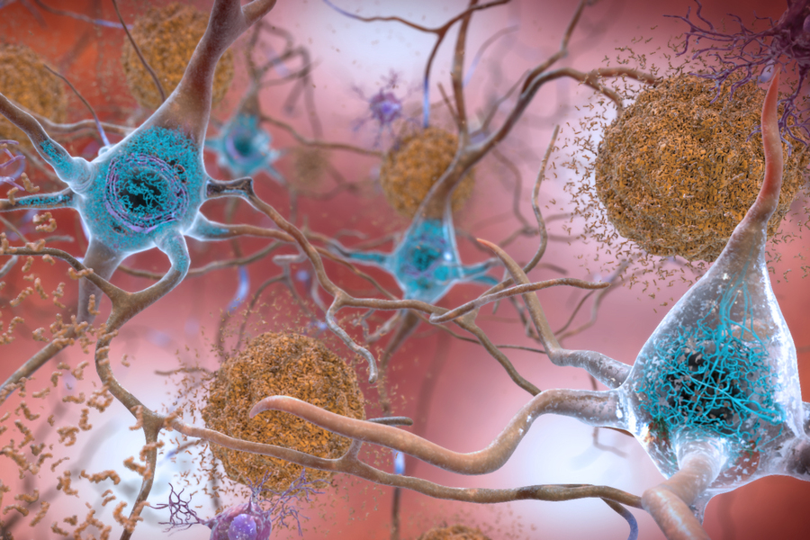

Understanding Alzheimer's: Risk Reduction, Current Research, and a Glimpse into the Future
EDITED: July 7, 2024
This article delves into the latest research on Alzheimer's, exploring the role of proteins like amyloid plaques and tau tangles in disrupting brain function. It also discusses promising new treatments, including a groundbreaking peptide that has shown potential in protecting against neurodegeneration. While there is no cure yet, understanding the risk factors and staying informed about emerging therapies offers hope for managing and potentially preventing this debilitating disease.
Alzheimer's sisease is a neurological disorder that affects the brain, which leads to a progressive decline in memory, thinking capacity and behavior. It's currently the most common cause of dementia.. Some of the early symptoms of Alzheimer's disease include having a hard time remembering recent events, having trouble completing familiar chores and misplacing items. Progressively, these symptoms worsen and the individual experiences confusion, memory loss, difficulty communicating and strong mood changes. Ultimately, Alzheimer's disease renders the affected unable to complete the simplest tasks like chewing, swallowing and breathing.

The precise causes of Alzheimer's disease are still being studied. The current understanding of the disease suggests it's most likely due to brain changes physically recognized by the accumulation of two abnormal proteins in the brain called amyloid plates and tau tangles. It's believed these proteins are able to disrupt the communication between neurons and lead to their eventual death, which causes the symptoms mentioned above. We aren't sure why these proteins are formed yet but, so far, we have currently identified genetic and environmental factors to be involved in the disease's development.
We have found that there's a strong correlation between Alzheimer's and sleep disorders and we strongly suspect sleep disorders are one of the main causatives for Alzheimer's during old age. The national institute of aging, along the Alzheimer's Institute and the CDC recommend engaging in exercise, maintaining a healthy diet and avoiding alcohol and drugs to reduce the risk of dementia during old age.
Alzheimer's disease has no cure yet. Its symptoms' development may only be delayed through the use of certain drugs which may not be available for all the people. However, ongoing research has yielded a better understanding of the disease. One of the latest studies has identified a very common enzyme involved in neuronal migration and survival to also be responsible in the development of Alzheimer's disease by promoting the formation of tau tangles and amyloid plates. Knowing this allowed a team of researchers from MIT to engineer potential new tratments that provide protection against neurodegeneration in several models. This, and other novel treatments may improve the expectancy of Alzheimer's patients in the near future.